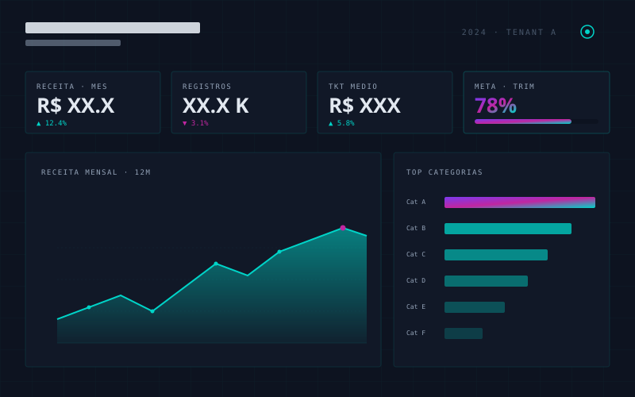
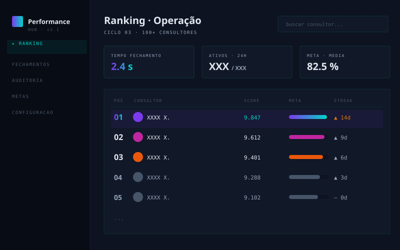

Do problema ao código.
Projetos reais. Dados anonimizados conforme acordo com os clientes.

Fac. BI — Ecossistema Analítico
BI multi-tenant para operação 0800 entre as maiores do Brasil. Três audiências, um modelo, isolamento de dados por cliente via Power Query.

BI Associação — Financeiro & Comercial
Dashboards financeiro e comercial com rateio proporcional de custos. Pipeline Python → Power BI com extração automática de PDFs.

Performance Hub
Sistema de gamificação para operação com 100+ consultores. Fechamento manual de 30 min → segundos. Histórico imutável e auditável.

ContraX Extract
Extração automática de contracheques PDF para Excel estruturado. Interface desktop, validação automática, aba de alertas.